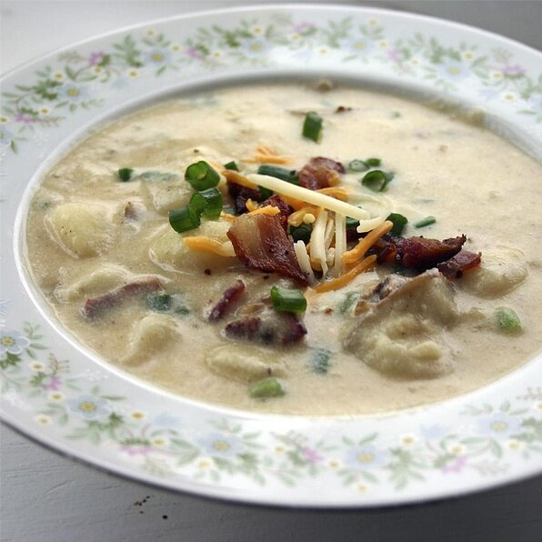

Baked Potato Soup

Description
It takes 15 min to prepare , 25 mins to cook which
can yield 5-6 servings
Ingredients
- 12 slices bacon
- 2/3 cup margarine
- 2/3 cup all-purpose flour
- 7 cups milk
- 4 large baked potatoes, peeled and cubed
- 4 green onions, chopped
- 1 1/4 cups shredded Cheddar cheese
- 1 cup sour cream
- 1 teaspoon salt
- 1 teaspoon ground black pepper
Steps
- Place bacon in a large, deep skillet. Cook over medium heat until browned. Drain, crumble, and set aside.
- In a stock pot or Dutch oven, melt the margarine over medium heat. Whisk in flour until smooth. Gradually stir in milk, whisking constantly until thickened. Stir in potatoes and onions. Bring to a boil, stirring frequently.
- Reduce heat, and simmer 10 minutes. Mix in bacon, cheese, sour cream, salt, and pepper. Continue cooking, stirring frequently, until cheese is melted.
Nutrition Facts
Per Serving:
748 calories;
- Protein 27.2g;
- Carbohydrates 49.7g;
- Fat 49.3g;
- Cholesterol 84.5mg;
- Sodium 1335.2mg.